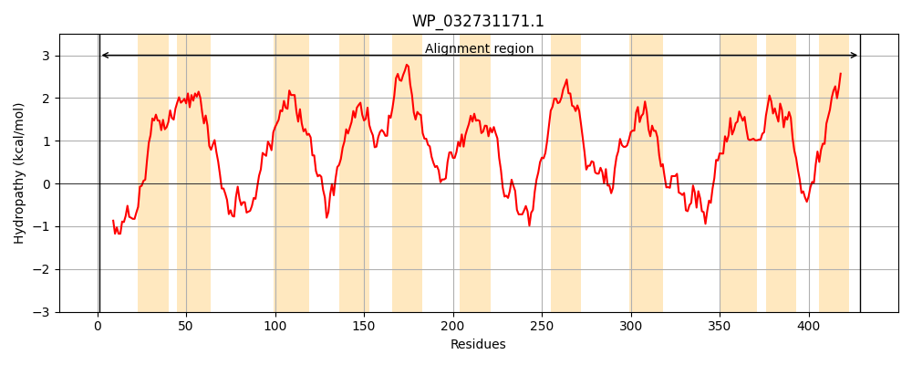
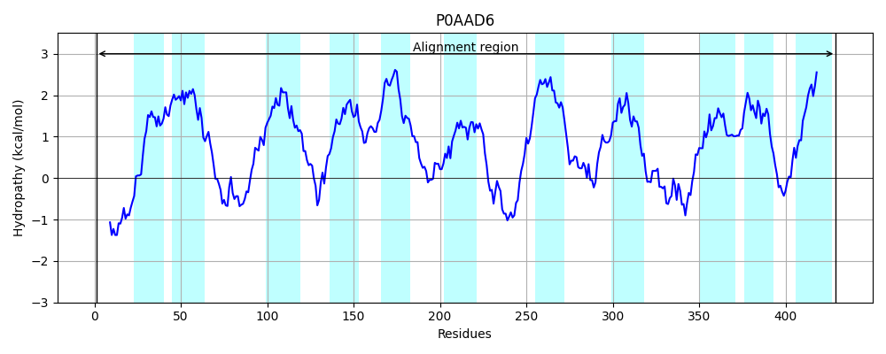
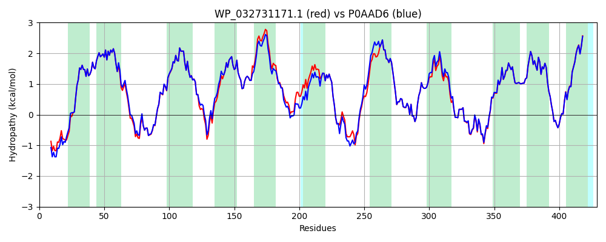

Hit Accession: P0AAD6
Hit TCID: 2.A.42.2.1
Hit Description: gnl|BL_ORD_ID|8656 gnl|TC-DB|P0AAD6|2.A.42.2.1 Serine transporter - Escherichia coli.
Mach Len: 429
e:0.000000
Query TMS Count : 11
Hit TMS Count: 11
TMS-Overlap Score: 10.450000
Predicted Substrates:CHEBI:9116;serine
BLAST Alignment:
Score: 2030 , Bit scores: 786 bits, E-value: 0.0e+00, Alignment length: 429, Percentage identity: 94
Query: 1 METTQTSTIVSGETRSGWRKTDTMWMLGLYGTAIGAGVLFLPINAGVGGMIPLIIMAILAFPMTFFAHRGMTRFVLSGKNPGEDITEVVEEHFGVGAGKLITLLYFFAIYPILLVYSVAITNTVETFMSHQLHMTPPPRAILSLILIVGMMTIVRFGEQMIVKAMSILVFPFVIALMILALYLIPQWNGAALETLSLSSASATGNGLLMTLWLAIPVMVFSFNHSPIISSFAVAKREEYGAGAEKKCSSILARAHIMMVLTVMFFVFSCVLSLSPADLAAAKEQNISILSYLANHFNAPVIAWMAPIIAMIAITKSFLGHYLGAREGFNGMVIKSLRSKGKSIEVNKLNKLTALFMLVTTWIVATLNPSILGMIETLGGPIIAMILFLMPMYAIQKVPAMRKYSGHISNVFVVIMGLIAISAIFYSLFS 429
METTQTSTI S ++RS WRKTDTMWMLGLYGTAIGAGVLFLPINAGVGGMIPLIIMAILAFPMTFFAHRG+TRFVLSGKNPGEDITEVVEEHFG+GAGKLITLLYFFAIYPILLVYSVAITNTVE+FMSHQL MTPPPRAILSLILIVGMMTIVRFGEQMIVKAMSILVFPFV LM+LALYLIPQWNGAALETLSL +ASATGNGL MTLWLAIPVMVFSFNHSPIISSFAVAKREEYG AE+KCS ILA AHIMMVLTVMFFVFSCVLSL+PADLAAAKEQNISILSYLANHFNAPVIAWMAPIIA+IAITKSFLGHYLGAREGFNGMVIKSLR KGKSIE+NKLN++TALFMLVTTWIVATLNPSILGMIETLGGPIIAMILFLMPMYAIQKVPAMRKYSGHISNVFVV+MGLIAISAIFYSLFS
Sbjct: 1 METTQTSTIASKDSRSAWRKTDTMWMLGLYGTAIGAGVLFLPINAGVGGMIPLIIMAILAFPMTFFAHRGLTRFVLSGKNPGEDITEVVEEHFGIGAGKLITLLYFFAIYPILLVYSVAITNTVESFMSHQLGMTPPPRAILSLILIVGMMTIVRFGEQMIVKAMSILVFPFVGVLMLLALYLIPQWNGAALETLSLDTASATGNGLWMTLWLAIPVMVFSFNHSPIISSFAVAKREEYGDMAEQKCSKILAFAHIMMVLTVMFFVFSCVLSLTPADLAAAKEQNISILSYLANHFNAPVIAWMAPIIAIIAITKSFLGHYLGAREGFNGMVIKSLRGKGKSIEINKLNRITALFMLVTTWIVATLNPSILGMIETLGGPIIAMILFLMPMYAIQKVPAMRKYSGHISNVFVVVMGLIAISAIFYSLFS 429 | Protein Hydropathy Plots: |
|---|
|  |  |
Pairwise Alignment-Hydropathy Plot:
|
|---|
|  |